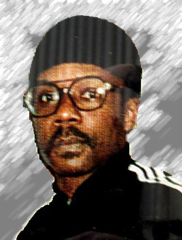
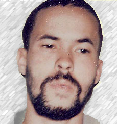

-

Vernon
EvansVernon Lee Evans was sentenced in May 1984 in Baltimore County for the contract killings of two witnesses scheduled to testify against Anthony Grandison in a federal drug trial. Grandison, who is also on Maryland’s death row, hired Evans and paid him $9,000. Both men were convicted for the shooting deaths of David S. Piechowicz and Susan Kennedy at a Pikesville motel. Evans used a MAC-11 pistol.
-
Anthony
GrandisonAnthony Grandison was sentenced in 1984 in Baltimore County for ordering the contract killings targeting witnesses who were going to testify in a 1983 federal narcotics case in which he was involved. Vernon Lee Evans, also on Maryland's death row, was the other man involved in the deaths of David S. Piechowicz and his sister-in-law Susan Kennedy, who was mistaken for his wife, Cheryl Piechowicz.
-
John
Booth-ElJohn Booth-El has been on death row for almost 30 years for robbing and fatally stabbing an elderly couple, Irvin and Rose Bronstein, in 1983. Booth-El's first death sentence was overturned by the U.S. Supreme Court in 1987 in a ruling that said testimony by the victims’ families had the potential to inflame jurors. The Maryland Court of Appeals struck down the second death sentence in 1989 because the judge refused to allow testimony related to parole eligibility. Booth-El was resentenced to death in 1990 and has been on death row since.
-

Heath
BurchHeath William Burch was sentenced in 1996 in Prince George's County after a failed late-night robbery ended with Burch killing a neighbor, Robert F. Davis, and his wife, Cleo Davis, in Capitol Heights in March 1995. Burch entered the home unarmed but used a pair of scissors during the assault. He left with a pickup truck, four guns and $105.
-

Jody
Lee MilesJody Lee Miles was sentenced in 1998 in Queen Anne's County, after he fatally shot Edward J. Atkinson in the woods in Mardela Springs while collecting a debt for a loan shark. Miles confessed to the murder and pleaded not guilty in Queen Anne’s County Circuit Court. His lawyer claimed the evidence, which included his admission, was invalid because it was obtained via an illegal wiretap. However, the Queen Anne’s court decided to throw everything out except the confession.